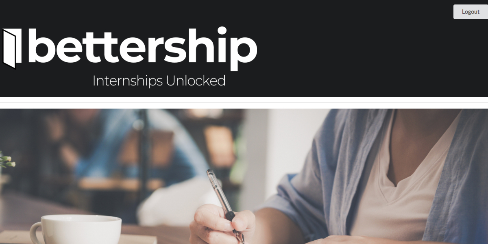

<section>
    

  <div id="modal1" class="modal modal-fixed-footer" materialize="modal" [materializeParams]="[{dismissible: true, opacity: .2}]" [materializeActions]="modalActions">
    <div class="modal-content">
      <h4>Bettership</h4>
      <h6>Built using: React, React Router, Semantic UI, PostgreSQL, bcrypt, JWT, Knex.js, Express.js, Node.js, Heroku, Firebase</h6>
      <div class="divider"></div>
      <p>
        The cumulative group project of Galvanize's WDI program, this app was built by myself and 3 other students. Bettership is
        an app designed to assist prospective interns identify exciting and relevant opportunities with ease.
      </p>
      <p>
        I was team lead of the back-end code, tasked with creating our multi-table database with Knex.js and PostgreSQL (including
        joining tables), creating our routes with Express.js, and implementing authorization functionality with bCrypt and JWTs.
      </p>
      <p>
        On the frontend, our team used React, React Router, and Semantic UI. I helped where I could, particularly with working through
        logic, but as of the time that this project was undertaken I had never touched React so I don't want to oversell my contributions
        on that front :)
      </p>
      <p>
        Still needed: while we were very happy with our MVP, a few things would need to be implemented to fully realize our vision.
        Chiefly, taking the UX one step further and allowing the app to manage prospective interns' application process, from submission
        to acceptance. As of right now, it only displays internships and links them to the internship's website.
      </p>
    </div>
    <div class="modal-footer">
      <a class="modal-action modal-close waves-effect waves-green btn-flat" 
        href="https://bettership-9f962.firebaseapp.com/">View Live</a>
      <a class="modal-action modal-close waves-effect waves-green btn-flat" 
        href="https://github.com/cchooley/Project-CHOK/">GitHub</a>
      <a class="waves-effect waves-green btn-flat" (click)="closeModal()">Close</a>
    </div>
  </div>
  </section>